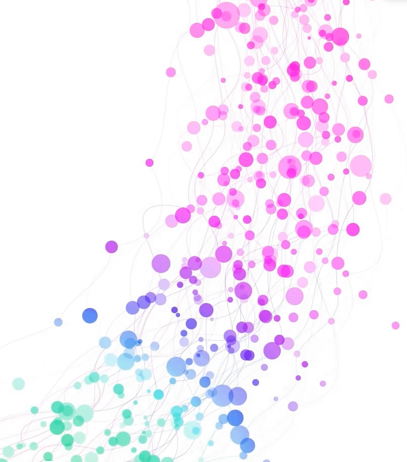

The Acute to Chronic Pain Signatures (A2CPS) dataset is a rich, longitudinal collection of clinical, psychosocial, functional, sensory, imaging, and biological data that can support research questions within and well beyond pain science. This workshop introduces the study and cohort, highlights key baseline data, and shows you how to access and navigate it.

Genomics, extracellular RNA, proteomics, lipidomics and metabolomics from the same people scanned with structural, diffusion, resting-state and task MRI.
Omics platforms →On a2cps.orgParticipants are followed from before surgery through 12 months after, with a primary chronic-pain outcome at 6 months.
Study timeline →ProtocolCurrently the 9th-largest neuroimaging dataset, with extensively preprocessed images and image-derived phenotypes ready for analysis.
Imaging measures →Brain imagingBaseline data are released in versioned public releases on the NIMH Data Archive, open to any researcher with an approved data access request.
How to get access →Accessing our dataThe session moves from an introduction to the study and cohort, through the greatest hits of the baseline data, to hands-on guidance on the NIMH Data Archive, starter kits, and LLM-based tools. It closes with open discussion.
Every participant contributes to several modalities, so the data types can be linked person by person. Participant counts are from public Release 2.0.0 (baseline data, Fall 2025). Each tile links to the detailed description on a2cps.org; the full questionnaire list and data dictionaries are on the About the Data page.
Pain intensity and spread, disability, mood, sleep, fatigue, catastrophizing, trauma history, resilience, social support, substance and opioid use, personality, expectations.
~1,400 participants · 30+ instrumentsQuestionnaires & data dictionaries on a2cps.orgPressure pain thresholds at the surgical site and a remote site, mechanical temporal summation, and conditioned pain modulation with a cold-water conditioning stimulus.
~1,400 participants · pre-op & 3 monthsPsychophysical assessments on a2cps.orgFive-times sit-to-stand and 10-meter walk (knee cohort); deep breathing and cough (thoracic cohort); movement-evoked pain before and after each task.
~1,400 participantsFunctional testing protocols on a2cps.orgSNP genotyping, extracellular RNA sequencing, Luminex cytokines and mass-spec proteomics, plus lipidomics and metabolomics from three omics centers.
559 – 1,113 participants by platformOmics from blood on a2cps.orgT1 structure, diffusion-weighted imaging, resting-state fMRI, and pressure-cuff pain-evoked fMRI, with FreeSurfer, connectivity and brain-age derivatives.
1,017 participants · pre-op & 3 monthsBrain imaging on a2cps.orgDiagnoses, medications, procedures and labs from the clinical record, aligned with self-report and mass-spectral data.
520 participantsAbout the data on a2cps.orgEach part of the session pairs with resources on this site and on a2cps.org, so you can follow up on anything that catches your interest.
Organization of the consortium, goals of the program, and the protocol and timeline in two surgical cohorts.
Screening, enrollment and retention across the knee arthroplasty and thoracic surgery cohorts.
Greatest hits of the baseline data: brain-wide association studies, brain age, and effect-size comparisons across cohorts.
Navigating the NIMH Data Archive, working through the starter kits, and applying LLM-based tools to the data.
Data access requests take time to approve. Starting the NDA process before September 29 means you can follow along with the hands-on sections using real data.